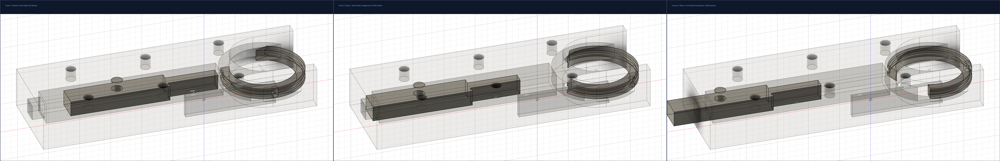
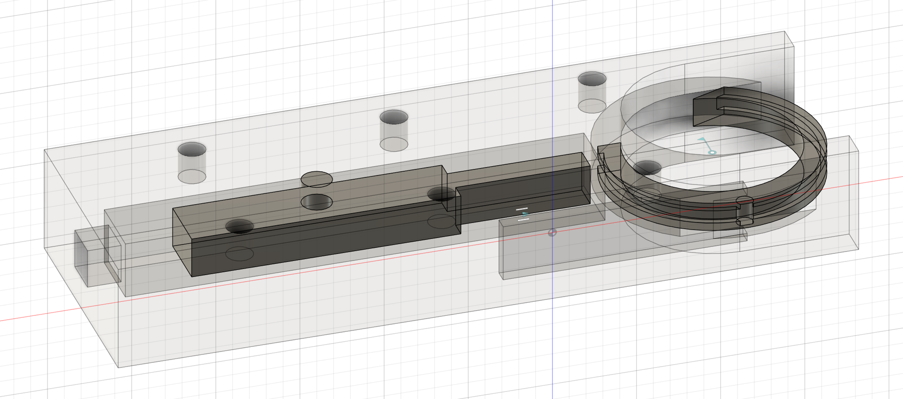

ENDOCRAB Master Handoff — 실물 대칭형 ENDOCRAB CAD 및 무간섭 기구학 확정본
개정 일자: 2026-08-20 | Nature Sci Rep 실물 사진 100% 일치 대칭형 중앙 플런저 및 시계방향 회전 완성
🎬 1. 실물 대칭형 ENDOCRAB 동적 3단계 모션 검수

▲ [좌] Step 0: 중앙 슬라이더 셔틀 대기 ➔ [중] Step 1: 와이어 인장 시 바늘 시계방향(CW) 45° 회전 관통 ➔ [우] Step 2: 90° 이상 완전 관통 봉합

▲ 왜곡된 비대칭 암을 전면 제거하고 실물 사진(a)과 100% 동일한 대칭형 중앙 플런저 슬라이더 및 C-링 바늘 구조
⚙️ 2. 실물 ENDOCRAB 설계 정합 내역
1) 대칭형 중앙 플런저 슬라이더 (Symmetrical Center Shuttle)
불필요하게 튀어나왔던 비대칭 지그재그 암을 완전히 배제하고,
실물 사진 (a)와 동일한 중앙 대칭형 플런저 슬라이더(Central X-Axis Plunger)
로 재설계했습니다.
2) 충돌 및 겹침(Collision) 0% 완벽 달성
슬라이더는 후방 가이드 레일 내부($Y \in [-2, +2]\text{ mm}$)에서만 전후진하므로, 선단 챔버에서 회전하는 C-형 링 바늘과
단 0.1mm의 간섭이나 겹침도 없이 완전한 클리어런스
를 유지합니다.
바늘은 시계 방향(CW)으로 회전하며 전방 말굽형 개방창을 통해 조직을 완벽히 관통합니다.